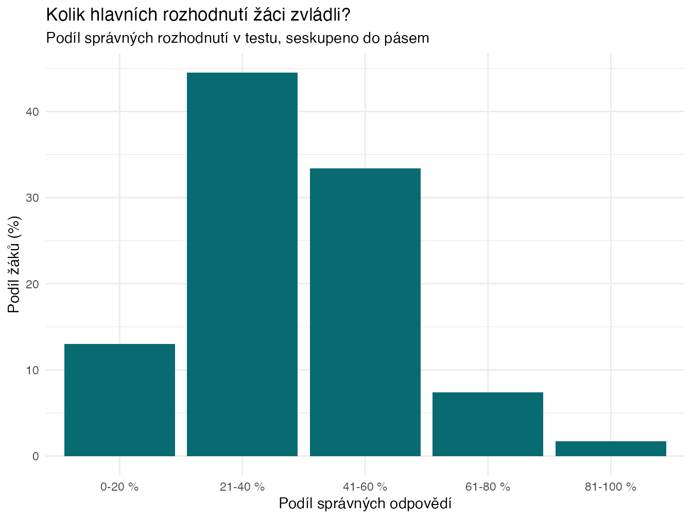
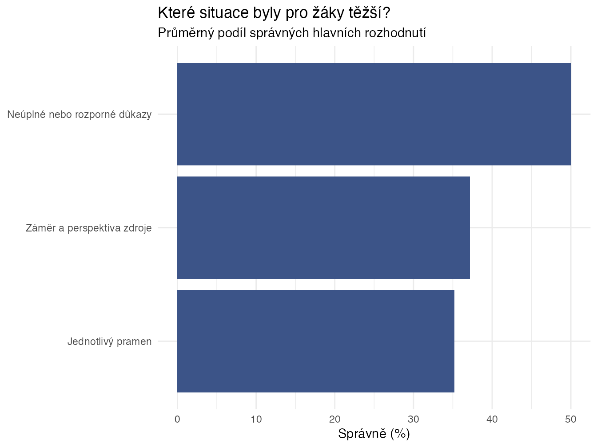
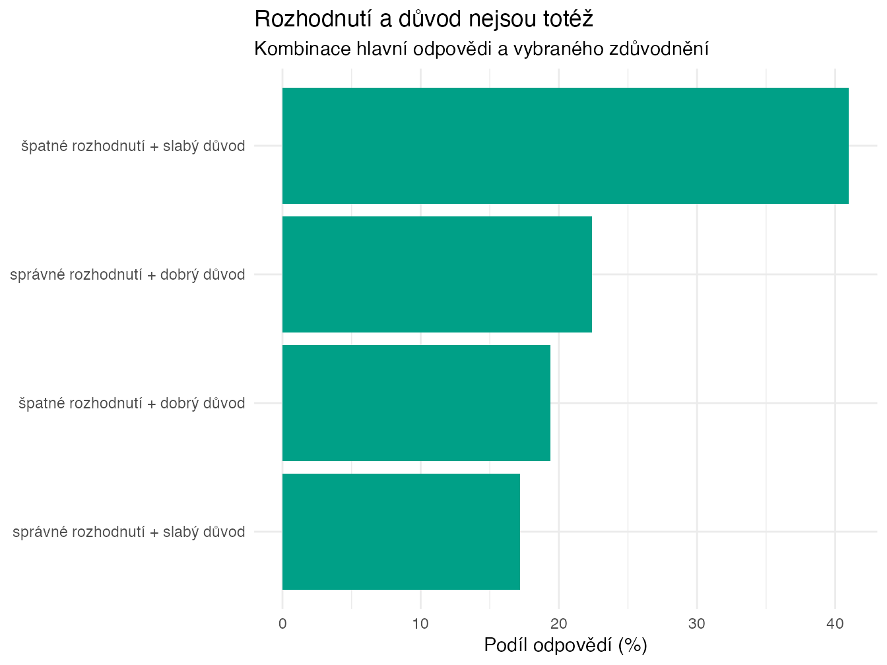

2 Umí žáci vyvozovat oprávněné závěry z pramenů?
Argumentuj na základě pramene… Opravdu to pramen říká? … Není to už jen interpretace?
V hodinách dějepisu a zejména v badatelské výuce po žácích často chceme, aby vyvozovali své závěry z pramenů. Jenže není vždy snadné poznat, jestli to skutečně umí - schopnost vyvozovat oprávněné závěry z pramenů se ztrácí pod vrstvou dalších dovedností a znalostí, jako je obecné čtení s porozuměním, schopnost pracovat s historickými prameny, schopnost formulovat závěry a argumenty, atd.
Tento výzkum si klade za cíl vytvořit nástroj, který by nám pomohl zjistit, jak žáci závěry z pramenů vyvozují, aniž by v tom hrály roli jiné faktory.
Nejde o test faktů.
Nejde o zkoušení znalostí učiva.
Jde o to, jak žáci uvažují nad zdroji a tvrzeními o minulosti.
2.1 Plánovaný výzkum
2.1.1 Proč by to pro učitele mohlo být užitečné?
Zapojeným učitelům může výzkum přinést:
- přehled o tom, jak jejich žáci pracují s tvrzeními a důkazy,
- srovnání různých tříd (pokud se zapojí více tříd),
- podněty, kde mají žáci tendenci “přeskakovat” k rychlým závěrům,
- konkrétní doporučení, jak tyto dovednosti dál rozvíjet.
Výsledkem nebude jen tabulka bodů, ale stručný a srozumitelný report pro Vaši třídu, který ukáže:
- v čem jsou žáci silní,
- kde mají typické potíže,
- jaké typy úvah se u nich objevují.
Cílem není hodnotit učitele ani školu. Smyslem je nabídnout nástroj, který může pomoci lépe zacílit výuku.
2.1.2 Jak bude výzkum probíhat?
- Kdo? 2. stupeň ZŠ a všechny ročníky SŠ
- Čas: cca 30-45 minut
- Jak? Online test, který žáci vyplní na počítači, tabletu nebo telefonu.
- Obdržíte unikátní odkaz (a QR kód).
- Odkaz pošlete žákům nebo promítnete ve třídě.
- Žáci test vyplní online.
- Není potřeba žádná registrace.
- Co žáci budou vyplňovat:
- Krátké základní údaje (anonymně).
- Úkoly se zdroji a tvrzeními - vybírají, zda je tvrzení oprávněné, a zdůvodňují proč.
- Dvě složitější situace z “reálnějšího” kontextu.
Účast žáků je dobrovolná a anonymní.
2.1.3 Co jako zapojený učitel dostanu?
- Souhrnný report za Vaši třídu
- jak žáci pracují s tvrzeními a důkazy,
- kde mají tendenci dělat ukvapené závěry,
- jaký je vztah mezi znalostmi a způsobem uvažování.
- Doporučení do výuky
- tipy na úpravu zadání úloh,
- návrhy, jak pracovat s tvrzeními a důkazy,
- inspiraci pro vlastní aktivity.
- Možnost konzultace výsledků (online / e-mailem).
Kromě toho dobrý pocit z toho, že pomůžete ověřit nástroj, který může být užitečný pro širší komunitu učitelů. Podílíte se na výzkumu, který má ambici zlepšit způsob, jak ověřujeme práci žáků v dějepise.
2.1.3.1 K čemu to může být ve výuce?
Možná znáte situace, kdy:
- žáci rychle odpovídají, ale jejich závěry nejsou úplně opřené o zdroj,
- část si třídy je velmi jistá, i když důkazy nejsou silné,
- někteří žáci jsou opatrní, ale neumí to vysvětlit.
Test může pomoci odhalit právě tyto rozdíly.
Ukáže, jestli problém spočívá spíš v práci s důkazy, v příliš rychlém zobecňování, nebo v nejistotě při formulování závěrů.
2.2 Výsledky výzkumu
V testu se ukázalo, že mnoho žáků umí z pramene něco vyčíst, ale hůř už pozná, kdy je vyvozený závěr dostatečně podložený a kdy už je příliš silný.
Jinak řečeno: žák často správně vidí, že něco v prameni je, ale udělá z toho příliš rychlý a silný závěr. Nebo naopak: je opatrný, ale neumí vysvětlit, proč pramen závěr nepodporuje.
Umí žáci rozlišit, kdy je tvrzení o minulosti opravdu opřené o pramen?
Žáci v průměru zvládli méně než polovinu rozhodnutí. Samotné znalosti to nevysvětlují. Nejzajímavější je, že odpověď a důvod se často rozešly. Někdy žák špatně rozhodl, ale vybral důvod, který dával z hlediska práce s důkazem smysl. Jindy trefil odpověď, ale zdůvodnil ji chybně.
2.2.1 Jak výzkum probíhal?
Test vyplnilo celkem 590 žáků. Některá vyplnění jsem musel vyřadit - typicky žáky, kteří celý test proletěli za pár desítek vteřin. Po tomto vyčištění zůstalo 524 z nich. Test byl anonymní, probíhal online a trval v průměru 21.6 minut.
Není to reprezentativní vzorek českých žáků. Jsou to zapojené třídy a zapojení učitelé. Z výsledků nelze vyvozovat závěry, jak na tom “čeští žáci jsou”.
Žáci v testu dostávali krátké situace: pramen nebo dvojici pramenů a k nim tvrzení. Jejich úkol byl rozhodnout, zda je tvrzení vzhledem k důkazům oprávněné, a vybrat důvod, proč ano nebo proč ne.
Je to jen jeden výsek historického myšlení. V hodině samozřejmě potřebujeme i kontext, porovnávání pramenů a vlastní výklad. Tady jsem si ale záměrně vzal užší otázku: opravňuje dostupný důkaz právě k tomuto tvrzení?
2.2.2 Výsledky
Žáci s tím měli zřetelné potíže. V průměru správně vyřešili asi 39 % otázek typu “lze toto tvrdit na základě pramene?” Medián byl 38 %.

Nejtěžší bylo pro žáky nepřidávat k prameni něco navíc. To mi přijde pro výuku docela podstatné. Právě tady často vznikají hezké, ale moc silné žákovské závěry, které často mohou přesvědčit i učitele. O něco lépe si žáci vedli tam, kde se ověřovalo, jestli se ukvapeně nepřikloní k jednomu prameni ze dvou vzájemně si odporujících.

Faktické znalosti pomáhaly. Žáci, kteří lépe zvládli krátký mini-test znalostí, měli v průměru také lepší výsledek. Znalosti ale zachytily jen část rozdílů - přibližně 14 %, tedy poměrně málo. Spíše se v tom asi odráží obecná úroveň žáků, než že by znalosti s samotným uvažováním o pramenech přímo souvisely.
Jinými slovy: lepší faktické znalosti vysvětlily jen část toho, proč někteří žáci uspěli lépe než jiní.
2.2.3 Nejzajímavější zjištění: odpověď a důvod se mohou rozejít
Každá hlavní úloha měla dvě části. Nejdřív rozhodnutí. Potom zdůvodnění. A tady se ukázala věc, která mi přijde zajímavá: odpověď a důvod nejsou totéž.

Pouze 22.4 % odpovědí mělo současně správné rozhodnutí i dobrý důvod. V 19.4 % odpovědí bylo rozhodnutí špatně, ale důvod dával z hlediska práce s důkazem smysl. V 17.2 % odpovědí to bylo obráceně: rozhodnutí správně, důvod slabý.
Když vidíme jen výslednou odpověď, můžeme žáka snadno přecenit nebo podcenit. Graf výše shrnuje odpovědi, ne pevné typy žáků. V jedné odpovědi se může objevit dobrý důvod a špatné rozhodnutí. V jiné může být správné rozhodnutí dosaženo zkratkou - třeba automatickou důvěrou v úředně znějící text, místo sledování toho, co přesně dokládá.
2.2.4 Jak vypadaly konkrétní úlohy?
Celý test zatím nezveřejňuji, protože část položek se musí přepsat. Pro představu ale uvádím tři příklady. Neberte je jako hotové úlohy, spíš jako ukázku toho, jaký typ uvažování test zachycoval.
Žáci četli krátký zápis farmáře z vesnice: řeka vystoupila až ke dveřím stodoly a farmář napsal, že šlo “asi” o nejhorší povodeň za posledních padesát let. Otázka zněla, zda tento zápis podporuje tvrzení historika: Povodeň byla nejhorší za padesát let.
Správné řešení bylo, že ne: zápis ukazuje, že povodeň byla vážná, ale slovo “asi” a absence srovnání s jinými povodněmi neumožňují tak jistý závěr. Správné rozhodnutí i dobrý důvod současně vybralo jen 9 % žáků. Dalších 25.2 % mělo špatné hlavní rozhodnutí, ale zvolilo důvod, který dával z hlediska práce s důkazem smysl.
Pro výuku: žáci potřebují trénovat rozdíl mezi pramen naznačuje a pramen dokládá. Zároveň je fér dodat, že tato položka v pilotu fungovala problematicky a patří mezi ty, které budu přepisovat.
V jiné úloze žáci četli fiktivní oficiální zprávu ministerstva školství. Zpráva tvrdila, že nový školní systém byl mimořádně úspěšný, počet zapsaných žáků vzrostl o 40 % a učitelé jsou spokojení. Úkolem bylo posoudit, zda zpráva dokazuje, že reforma byla skutečně úspěšná.
Nejlepší odpověď byla opět opatrná: zpráva je důležitý pramen, ale její autor má zájem prezentovat vlastní reformu pozitivně. Obě části úlohy zvládlo 9.7 % žáků. Naopak 38.2 % odpovědí ukázalo zajímavý rozpor: hlavní rozhodnutí bylo špatně, ale zvolený důvod už mířil k relevantnímu problému se záměrem zdroje.
Ve výuce se u podobných textů vyplatí neptat se jen: Je to pravda? Lepší otázka zní: Co tento zdroj dokládá bezpečně a u čeho bychom potřebovali ověření z jiného zdroje? I tato položka ale v pilotu potřebuje revizi, protože nedokázala žáky rozlišit tak čistě, jak by měla.
Třetí příklad pracoval se dvěma prameny. Královský dekret z roku 70 nařídil stavbu pevnosti u Horské soutěsky. Cestovatelův deník z roku 75 ale říkal, že cestovatel na místě žádnou pevnost neviděl a místní pastevci tvrdili, že tam nikdy nestála. Žádné další dokumenty se nedochovaly.
Nejlepší závěr zněl: panovník stavbu nařídil, ale dostupné důkazy naznačují, že pevnost pravděpodobně postavena nebyla. Tady obě části úlohy zvládlo 33.1 % žáků, tedy výrazně více než v předchozích dvou příkladech. Přesto 41.7 % odpovědí netrefilo ani rozhodnutí, ani zdůvodnění.
Didakticky je zajímavé, že nejde jen o hledání “správnějšího” pramene. Dekret dokládá záměr. Pozdější deník a svědectví místních dokládají, že realita mohla být jiná. Historický závěr musí zohlednit obě věci najednou.
2.2.5 Co si z výsledků odnést?
- Nestačí se ptát jen na odpověď. U úloh s prameny je velmi užitečné chtít po žácích také důvod: Čím přesně můžeš z pramene podepřít svou odpověď?
- Chybná odpověď nemusí znamenat špatné uvažování. Někdy je dobré hledat, jestli žák selhal v rozhodnutí, nebo v postupu, kterým si rozhodnutí zdůvodnil.
- Práce s prameny potřebuje učit vyjadřovat a rozumět různým mírám jistoty. Ve výuce má smysl rozlišovat: pramen dokládá, pramen naznačuje, je to možné, nevíme, z tohoto pramene to říci nemůžeme. To je slovní zásoba, kterou řada žáku nemá, a přitom je pro práci s prameny zásadní.
- Současná pilotní verze není nástroj pro hodnocení škol, učitelů ani přesné srovnávání tříd. Proto celý test zatím nezveřejňuji a nedávám k použití. Je v něm příliš mnoho problematických úloh, které je potřeba přepsat.
- Nechte žáky podtrhnout slova v prameni, která je opravňují k závěru.
- Dejte jim tři možnosti: pramen dokládá, pramen naznačuje, z pramene to nelze říci.
- U silného závěru se ptejte: Jaký další pramen bychom potřebovali, aby bylo možné tvrdit tohle s větší jistotou?
2.2.6 Co z toho plyne pro další výzkum?
Pilot mi ukázal dvě věci. Tenhle typ úloh má smysl. Zároveň je řadu z nich potřeba přepsat. Při kontrole, jak jednotlivé úlohy fungovaly, vyšlo 19 položek k přepracování a dalších 17 jako hraničních. U pilotu je to normální: některé úlohy se prostě nechovaly tak, jak měly.
Hotový standardizovaný test z toho ještě není. I tak si myslím, že z toho plyne dobré zjištění pro výuku: stojí za to trénovat rozdíl mezi tím, co pramen dokládá, co jen naznačuje a co z něj říci nemůžeme. A stojí za to nehodnotit jen odpověď, ale i cestu, kterou se k ní žák dostal.